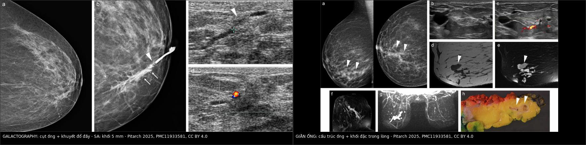
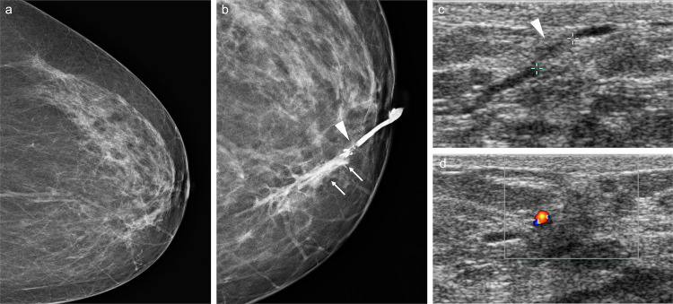
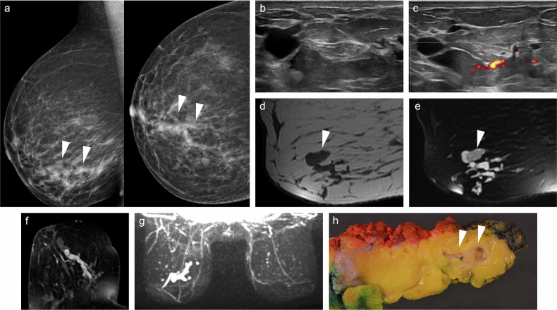

1714 — Chảy dịch núm một ống bệnh lý / Pathological nipple discharge (uniductal, spontaneous)
Tags: pattern:chay-dich-num pattern:ong-tuyen-gian pattern:not-trong-ong pattern:khuyet-dop-day vung:vu vung:num-vu score:BI-RADS protocol:sieu-am-tan-so-cao protocol:galactography protocol:MRI-vu protocol:soi-ong-dan
Mức chắc chắn (certainty): tổng hợp y văn (literature synthesis) — số liệu đọc trực tiếp từ toàn văn bài tổng quan đa phương thức về chảy dịch núm (Insights Imaging 2025, PMC11933581, CC BY 4.0), có ca nguyên văn cho quiz (Fig. 1 và Fig. 4 của bài đó).
1. Tổng quan bệnh học – cơ chế hình ảnh
- Hai loại chảy dịch, hai thái độ hoàn toàn khác nhau. Chảy dịch sinh lý (physiological) thì hai bên, nhiều ống, không tự chảy (chỉ ra khi bóp), màu trắng–xanh–vàng; nguyên nhân thường gặp nhất là tăng prolactin do thuốc (đặc biệt thuốc chống loạn thần), có thai/cho bú, suy thận, xơ gan, u tuyến yên. Chảy dịch bệnh lý (pathological nipple discharge, PND) thì một bên, MỘT ống, tự chảy, kéo dài, bất kể màu — chỉ cần một trong bốn đặc điểm này là phải hình ảnh hóa. Hơn 80% phụ nữ có chảy dịch núm ít nhất một lần trong đời, nhưng ung thư chỉ 3–23% ở nhóm PND; nhóm chảy máu có nguy cơ cao nhất, và tới 12% ca PND không chảy máu vẫn có ung thư.
- Vì sao "một ống" là chìa khóa giải phẫu: mỗi núm có 15–20 lỗ ống tuyến sữa đổ riêng ra da. Dịch tự chảy từ đúng một lỗ nghĩa là tổn thương khu trú trong một nhánh ống — đó cũng chính là lý do soi ống dẫn (ductoscopy) và chụp ống dẫn (galactography) có thể "đi theo" tổn thương, trong khi siêu âm/mammography chỉ thấy nó khi tổn thương đủ to.
- TẠI SAO hình ảnh hay âm tính (vật lý):
- Nhũ ảnh: tổn thương nằm trong ống 1–2 mm ngay sau núm, bị mô tuyến dày đặc và chính núm che phủ; dấu hiệu duy nhất thường chỉ là cấu trúc ống hình ống dạng nhánh tụ về núm hoặc vi vôi hóa hình que trong chất tiết cô đặc. Vì vậy phải có phim phóng đại ± chụp núm nghiêng.
- Siêu âm: đầu dò thẳng 12–18 MHz cho trục ngang 0,1–0,2 mm, đủ thấy khối trong lòng ống 5 mm; nhưng vùng sau quầng có bóng khí giữa đầu dò–da–núm và nhiều cấu trúc hội tụ, nên phải đặt đầu dò vuông góc trục ống và quét cả dọc lẫn ngang.
- Galactography: bơm 0,2–0,3 mL cản quang không ion qua cannula tù 30 G vào đúng lỗ ống đang chảy. Cản quang lấp đầy lòng ống nên khối trong lòng trở thành khuyết đổ đầy (filling defect) và chỗ tắc thành hình "cụt" (ductal cut-off) — đây là phép "đúc khuôn" giải phẫu mà không modality nào khác làm được.
- MRI: dịch giàu protein và máu làm ngắn T1 → ống giãn tăng tín hiệu trên T1 fat-sat trước tiêm; ống chứa dịch tăng tín hiệu T2; nhú ống trong (papilloma) giảm tín hiệu T2/T1 và ngấm thuốc thì động mạch–muộn, nhiều nhú có thể tạo non-mass enhancement (NME) hình đường/đoạn giống DCIS. MRI nhìn được toàn bộ hệ ống + mô vú quanh mà không cần đặt cannula, nên thấy được tổn thương xa núm và vú đối bên.
- CEM (chụp nhũ ảnh cản quang): dùng iod + hiệu chỉnh năng lượng để thấy tăng sinh mạch u, không phụ thuộc mật độ tuyến — nhưng kém nhạy hơn MRI với tổn thương < 5 mm (MRI 100% vs CEM 65% cho nhú ống trong).
- Ngưỡng định lượng cần nhớ:
- Nhú ống trong (intraductal papilloma) = 36,8–57% nguyên nhân PND; giãn ống (duct ectasia) = 5,5–33%, thường > 50 tuổi, đối xứng hai bên.
- Tế bào học dịch núm: độ nhạy chỉ 11–34,6%, độ đặc hiệu 81–100%, âm giả tới 65% → không dùng để loại trừ ung thư.
- Siêu âm: độ nhạy 36–83%, độ đặc hiệu 12–84% (dao động rất rộng).
- Galactography: nhạy 77,4% / đặc hiệu 75,7% (146 ca); MRI cùng loạt: 85,7% / 71,4%.
- MRI: nhạy 85,71%, đặc hiệu 98,53%, PPV 92,31%, NPV 97,1%; MRI âm sau hình ảnh thường quy âm → nguy cơ ung thư < 4% (103 phụ nữ); gộp: MRI 92%/76% so với galactography 69%/39%.
- Ductoscopy: độ chính xác 95,3% so với MRI 83,6%; NPV 98–100%.
2. Mẫu hình + chẩn đoán phân biệt theo vị trí (Gamut)
- Khuôn 1 — Dịch tự chảy một ống, trong/thanh dịch, không sờ thấy khối. Gamut theo vị trí: nhú ống trong trung tâm (central papilloma) ngay sau núm > giãn ống > viêm quanh ống (periductal mastitis) > núm tuyến (nipple adenoma). Chốt: khối trong lòng ống có cuống mạch trên siêu âm.
- Khuôn 2 — Dịch lẫn máu. Gamut: nhú ống trong vs DCIS/ung thư biểu mô vs viêm quanh ống vs loét ống do giãn ống. Máu không đồng nghĩa ung thư, nhưng máu + khối/núm co kéo thì phải loại ung thư.
- Khuôn 3 — Dịch một ống + khối sau quầng sờ được. Gamut: papilloma lớn vs ung thư nhú (papillary carcinoma) vs áp-xe/viêm quanh ống vs nang sau quầng vỡ. Chốt: bờ khối, ngấm thuốc, hạch.
- Khuôn 4 — Dịch nhiều ống, hai bên, màu đục/sữa. Gamut: sinh lý/tăng prolactin vs giãn ống vs bệnh tuyến vú dạng nang–xơ (fibrocystic). Chốt: không cần hình ảnh hóa nếu thuần sinh lý, nhưng vẫn phải loại "dịch bất thường một bên".
- Khuôn 5 — Nam giới chảy dịch. Gamut: ung thư vú nam vs gynecomastia vs giãn ống/núm tuyến. Chốt: ung thư ở 23–57% nam có PND → chụp nhũ ảnh từ 25 tuổi, không trấn an bằng "nam ít bị".
- Khuôn 6 — Dịch tái phát sau cắt ống. Gamut: còn ống bệnh lý chưa cắt vs papilloma tái phát vs ung thư bị bỏ sót vs viêm quanh ống. Chốt: đối chiếu mô bệnh cũ + MRI trước khi mổ lại.
- Gợi nhớ "DUCT": Discharge một ống tự chảy · Ultrasound 12–18 MHz là bước đầu · Cytology không loại trừ · Tissue (MRI/CEM/ductoscopy) khi hình ảnh thường quy âm.
3. Bảng so sánh phân biệt (ma trận đối chiếu)
| Thực thể (entity) | Hình ảnh điển hình (SA / nhũ ảnh / galactography / MRI) | Chốt vào (rule-in) | Chốt loại (rule-out) | Gợi ý xác nhận |
|---|---|---|---|---|
| Nhú ống trong (intraductal papilloma) | SA: khối giảm âm 3–10 mm trong lòng ống giãn, có cuống mạch trên Doppler; galactography: khuyết đổ đầy + cụt ống; MRI: nốt giảm T2 trong ống tăng T2, ngấm thuốc, có thể NME hình đường | Khối trong lòng ống + mạch trong cuống + ống dẫn về núm | Khối NGOÀI ống, không liên quan ống dẫn → nghĩ u khác; xâm lấn mô đệm → không phải papilloma đơn thuần | SA + cắt ống dẫn/soi ống dẫn; VAB nếu tổn thương xa núm |
| Giãn ống (duct ectasia) | Nhũ ảnh: cấu trúc ống dạng nhánh tụ về núm ± vôi hóa hình que; SA: ống giãn, dịch trong/echo lẫn mảnh vụn; MRI: ống tăng T2, tăng T1 trước tiêm do protein, thường không ngấm | Nhiều ống giãn đối xứng sau quầng, > 50 tuổi, không khối đặc | Khối đặc trong ống có mạch → phải loại papilloma/ung thư | SA hai bên + đối chiếu lâm sàng |
| Viêm quanh ống (periductal mastitis) | SA: dày thành ống, giảm âm quanh ống, có thể áp-xe; MRI: ngấm kiểu vòng/viền hoặc NME giống DCIS | Đau + dày thành ống + ngấm viền, đáp ứng kháng sinh | Nốt đặc có mạch, không viêm → không phải viêm quanh ống | Lâm sàng + kháng sinh; sinh thiết nếu không lui |
| DCIS / ung thư biểu mô | Nhũ ảnh: vi vôi hóa đa hình xếp tuyến tính; SA: khối bờ không đều, dày da, hạch bất thường; MRI: NME đoạn hoặc khối ngấm nhanh–thoát | Vi vôi hóa ác tính + NME/khối + hạch | Chỉ ống giãn, không vôi hóa, không ngấm → nguy cơ thấp | Nhũ ảnh phóng đại + MRI + sinh thiết |
| Núm tuyến (nipple adenoma) | Tổn thương trong chính núm, SA giảm âm đồng nhất, mạch tăng, CEUS ngấm mạnh; nhũ ảnh chỉ núm to/bất đối xứng | Trợt/nốt núm + tổn thương khu trú trong núm | Tổn thương sau quầng, không ở núm → không phải u tuyến núm | Sinh thiết punch + cắt trọn (bài 1692) |
| Giãn ống + chất tiết cô đặc (inspissated) | MRI: ống tăng T1 mạnh do protein; CT có thể giả khối tăng đậm độ | Tăng T1 lan dọc ống, không ngấm, cùng tín hiệu chất tiết | Ngấm thuốc rõ và giảm T2 → là mô đặc, không phải chất tiết | So sánh T1 trước tiêm với T2/T1 sau tiêm |
| Nang biểu bì / u tuyến syringomatous ở quầng | Tổn thương nông trong da–quầng, có thể vôi hóa; syringomatous xâm lấn mô mỡ, bờ không rõ | Vị trí trong da/quầng + cấu trúc nang sừng | Trong lòng ống tuyến sữa → không phải tổn thương da | Sinh thiết/cắt trọn |
| Ung thư nhú (papillary carcinoma) | Khối trong ống giãn, có thể vôi hóa, ngấm mạnh không đều, hạch | Cấu trúc nhú ác trên mô bệnh, mất lớp cơ biểu mô | Có lớp cơ biểu mô (p63+) bao quanh → lành | Cắt trọn + IHC p63/CK5/6 |

Trái: galactography — ống bị "cụt" và khuyết đổ đầy sát núm (đầu mũi tên), cản quang thoát ra mô quanh ống ở các nhánh xa (mũi tên), kèm siêu âm khối 5 mm trong lòng ống giãn có tín hiệu Doppler. Phải: giãn ống — cấu trúc ống dạng nhánh trên nhũ ảnh, khối đặc trong lòng ống giãn trên siêu âm, ống tăng T2 và khối giảm T2 trên MRI, kèm tiêu bản đại thể. Nguồn: Pitarch M và cs., Insights Imaging 2025, Fig. 1 và Fig. 4 (CC BY 4.0).Ba dấu hiệu quyết định trên ảnh
- Khuyết đổ đầy (filling defect): khối chiếm chỗ trong lòng ống đã bơm cản quang; bờ tròn nhẵn + ống dẫn vào gợi papilloma; bờ nham nhở + cụt hoàn toàn gợi ung thư.
- Dấu "cụt ống" (ductal cut-off): đầu ống tận cùng đột ngột, không có nhánh — nhưng cản quang thoát ra mô quanh ống cũng tạo hình giả "cụt", nên phải đọc kèm siêu âm tại chỗ.
- Khối trong lòng ống có mạch: siêu âm Doppler thấy mạch trong cuống là dấu mạnh nhất của papilloma; khối không có mạch thường là chất tiết/mảnh vụn.
4. Protocol chụp + phân độ BI-RADS + xử trí
Bước 1 — xác nhận là bệnh lý: hỏi tự chảy? một lỗ? một bên? kéo dài?; bóp quanh quầng để xác định một ống và màu dịch; khám tìm khối, co kéo núm, hạch; xét nghiệm prolactin/TSH nếu dịch hai bên hoặc nghi thuốc.
Bước 2 — chọn modality theo tuổi/giới (theo bài tổng quan):
- Nữ > 40 tuổi: FFDM hoặc DBT + siêu âm là đầu tay. DBT cho độ nhạy 100% và độ đặc hiệu 82,9% so với 61,9% của MRI trong một loạt 53 ca — nhưng cỡ mẫu nhỏ.
- Nữ 30–39 tuổi: siêu âm trước, thêm FFDM/DBT nếu siêu âm nghi ngờ hoặc có yếu tố nguy cơ. Nữ < 30: siêu âm.
- Nam giới: FFDM/DBT từ 25 tuổi (nguy cơ ung thư 23–57% khi có PND), siêu âm bổ trợ.
- Hình ảnh thường quy âm hoặc không kết luận: MRI vú có cản quang là bước kế tiếp, thay thế galactography ở nơi có MRI. MRI âm đủ để theo dõi, không cần mổ (NPV 97,1%; nguy cơ ung thư sau MRI âm < 4%).
- Không có MRI hoặc chống chỉ định: CEM ± sinh thiết dưới hướng CEM (nhạy 91–96%, đặc hiệu 74–77%).
- Galactography: khi cần định vị ống bệnh lý trước mổ hoặc MRI không sẵn; không còn là "chuẩn vàng" vì xâm lấn, khó đặt cannula và dễ thoát cản quang.
- Ductoscopy (0,9 mm): chọn bệnh nhân có thể tránh mổ; NPV 98–100%, độ chính xác 95,3% — nhưng không thấy được các nhánh xa và cần dụng cụ/gây mê.
Bước 3 — BI-RADS và ngưỡng can thiệp:
- Khối đặc trong lòng ống + chảy dịch một ống = BI-RADS 4 (không được 2 chỉ vì "nghĩ lành"), trừ khi đã có mô bệnh lành và hình ảnh phù hợp → BI-RADS 2.
- Chỉ giãn ống, không khối, không vôi hóa = BI-RADS 2–3, theo dõi.
- Tỉ lệ ung thư ở ca PND được mổ ống dẫn: 9,3–37%; nhưng nếu hình ảnh thường quy âm và không có bất thường lâm sàng, tỉ lệ ung thư gộp chỉ 8,1% (2,3–13,5%) — nghĩa là ~9/10 ca mổ là lành tính. Đây là lý do MRI âm được phép theo dõi.
- Chỉ định mổ vì triệu chứng: dịch kéo dài > 2 năm, ướt áo, ảnh hưởng sinh hoạt — cắt ống dẫn định hướng (microdochectomy) hoặc cắt ống lớn; biến chứng: không cho con bú được, hoại tử sau quầng, bỏ sót tổn thương ngoại vi.
- Sinh thiết hút chân không (VAB): lấy được tổn thương trong ống nếu không quá sát núm/da — vừa chẩn đoán vừa điều trị ở tổn thương lành.
flowchart TD
A[Chay dich num: tu chay, MOT ong, mot ben] --> B{Tuoi va gioi?}
B -->|Nam >= 25| C[FFDM/DBT + sieu am]
B -->|Nu > 40| C
B -->|Nu 30-39| D[Sieu am truoc]
B -->|Nu < 30| D
D --> E{Sieu am nghi ngo?}
E -->|Co| C
E -->|Khong| F[Theo doi lam sang]
C --> G{Hinh anh duong tinh?}
G -->|Co| H[Sinh thiet / cat ong dinh huong]
G -->|Khong| I[MRI vu co can quang]
I --> J{MRI duong tinh?}
J -->|Co| H
J -->|Khong| K[Theo doi, khong mo: nguy co ung thu duoi 4 phan tram]
I -.->|Khong co MRI| L[CEM hoac galactography]
5. Biến thể bình thường và cạm bẫy
- "Dịch" không phải bệnh: bóp núm ở phụ nữ có thai/cho bú, dùng thuốc chống loạn thần, suy giáp — hai bên, nhiều ống, không tự chảy thì không cần chụp; điều trị nguyên nhân (ngừng thuốc nếu được) là đủ.
- Cạm bẫy 1 — tin vào tế bào học âm: độ nhạy 11–34,6%, âm giả tới 65%; một tiêu bản "không tế bào ác" không loại trừ ung thư.
- Cạm bẫy 2 — đọc "cụt ống" trên galactography khi cản quang thoát ra ngoài: thoát cản quang quanh ống tạo hình giả tắc; luôn so với siêu âm đúng vị trí và chụp thêm bình diện.
- Cạm bẫy 3 — giãn ống có viêm ngấm thuốc kiểu vòng trên MRI: có thể bắt chước DCIS (ngấm vòng, NME); dấu loại là không có vi vôi hóa, không khối đặc, đáp ứng kháng sinh.
- Cạm bẫy 4 — máu/protein tăng T1 bị đọc là "mỡ" hoặc "u máu": tín hiệu T1 cao trong ống mất tín hiệu trên chuỗi fat-sat, nhưng vẫn tăng trên T1 sau tiêm nếu là mô; dùng ảnh trừ (subtraction) để phân biệt.
- Cạm bẫy 5 — bỏ qua tổn thương ngoại vi: siêu âm chỉ quét sau quầng sẽ bỏ sót papilloma/DCIS ở xa núm; MRI là modality duy nhất nhìn toàn hệ ống.
- Cạm bẫy 6 — "nam giới thì hiếm": PND ở nam có ung thư 23–57%, cao hơn nữ; không được trấn an khi chưa chụp.
- Cạm bẫy 7 — dịch tái phát sau cắt: kiểm tra mô bệnh toàn bộ ống đã cắt và MRI trước khi mổ lại, tránh cắt lần hai trong mô sẹo.
6. Tự lượng giá — Blind Quiz
Ca 1 — Nữ 63 tuổi, dịch thanh dịch tự chảy một ống vú trái, tế bào học âm tính.

- Gợi ý: nhũ ảnh thường quy không bất thường; bơm cản quang vào đúng lỗ ống đang chảy.
- Câu hỏi: (1) Dấu hiệu chính trên galactography? (2) Khối trên siêu âm nằm ở đâu và kích thước bao nhiêu? (3) Ba chẩn đoán phân biệt và dấu hiệu nào chốt?
Bấm để hiện đáp án (findings + chẩn đoán)
- Dấu hiệu: (b) ống bị cụt gần núm với khuyết đổ đầy (đầu mũi tên) và cản quang thoát ra mô quanh ống ở các nhánh xa (mũi tên); (c) khối 5 mm trong lòng ống giãn, (d) có tín hiệu Doppler.
- Chẩn đoán: nhú ống trong (intraductal papilloma) không atypia — mô bệnh từ sinh thiết kim lõi dưới siêu âm; bệnh nhân từ chối cắt ống và mất theo dõi.
- Vì sao: khối nằm trong lòng ống, có mạch nuôi → mô đặc trong ống; nhũ ảnh âm là điển hình vì tổn thương chỉ 5 mm sau núm.
- Nguồn ảnh: Pitarch M và cs., Insights Imaging 2025, Fig. 1b–d (CC BY 4.0).
Ca 2 — Nữ 50 tuổi, dịch thanh dịch tự chảy một ống vú phải; nhũ ảnh thấy "cấu trúc hình ống".

- Gợi ý: không sờ thấy khối; dịch tái diễn nhiều tháng.
- Câu hỏi: (1) Cấu trúc hình ống trên nhũ ảnh là gì? (2) Trên MRI, vì sao ống tăng tín hiệu T2 còn khối bên trong giảm tín hiệu T2? (3) Khi nào không cần mổ?
Bấm để hiện đáp án (findings + chẩn đoán)
- Dấu hiệu: (a) cấu trúc ống dạng nhánh tụ về núm (đầu mũi tên); (b–c) giãn ống + khối đặc trong lòng ống có mạch Doppler; (d) T1 sau tiêm: ống giảm tín hiệu, che lấp khối; (e) T2 fat-sat: ống tăng tín hiệu, khối giảm tín hiệu bên trong; (f–g) MIP và ảnh sau tiêm cho NME hình đường; (h) đại thể: ống giãn chứa khối.
- Chẩn đoán: nhú ống trong kèm giãn ống — mô bệnh xác nhận; NME hình đường của nhiều nhú có thể giống DCIS, nên phải có mô bệnh.
- Vì sao: dịch trong ống nhiều nước → T2 sáng; mô nhú đặc, ít nước → T2 tối và ngấm thuốc; đây là nguyên lý "tương phản nước–mô" của MRI vú.
- Không cần mổ khi: MRI âm sau hình ảnh thường quy âm và không có triệu chứng khó chịu — theo dõi là đủ (nguy cơ ung thư < 4%); mổ chỉ để **giải quyết triệu chứng** khi dịch kéo dài > 2 năm.
- Nguồn ảnh: Pitarch M và cs., Insights Imaging 2025, Fig. 4a–h (CC BY 4.0).
Bài liên quan chéo
- 1692 — U tuyến núm (nipple adenoma) (nguyên nhân khác của chảy dịch + trợt núm)
- 1690 — Bệnh Paget của núm (trợt núm một bên)
- 513 — Tổn thương vú nguy cơ cao (papilloma có atypia, xử trí)
- 510 — Vú: BI-RADS, nhũ ảnh, siêu âm, MRI
- 516 — Hình ảnh vú sau điều trị
- 500 — Tổng quan Vú & Sản phụ khoa
Không dùng để chẩn đoán độc lập khi chưa có người hướng dẫn.